Step 1:
Refer to Figure P4.95 for the input square wave in the text book.
(a)
Refer to Figure P4.95 (a) for the circuit in the text book.
The expression for the output voltage is,
The charging time of the circuit is higher than that of the time period of the input. Thus, the circuit can differentiate the input.
Step 2:
Draw the output waveform of the circuit as shown in Figure 1.
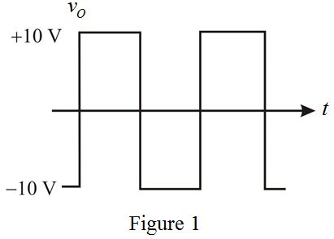
Step 3:
(b)
Refer to Figure P4.95 (b) for the circuit in the text book.
For negative half cycle of the input, the diode acts as forward bias (short) and the capacitor starts charging.
The output voltage is the voltage across short circuited diode.

For positive half cycle of the input, the diode acts as reverse bias (open) and the capacitor starts discharging.
Step 4:
Draw the output waveform.
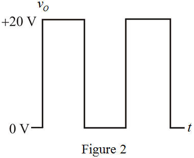
Step 5:
(c)
Refer to Figure P4.95 (c) in the text book.
For positive half cycle of the input, the diode acts as forward bias (short) and the capacitor starts charging.
The output voltage is the voltage across short circuited diode.
For negative half cycle of the input, the diode acts as reverse bias (open) and the capacitor starts discharging.
Step 6:
Draw the output waveform.
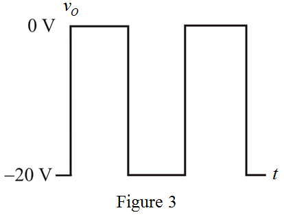
Step 7:
(d)
Refer to Figure P4.95 (d) in the text book.
For positive half cycle of the input, the diode acts as forward bias (short) and the capacitor starts charging.
The output voltage is the voltage across the resistor.
Since, no current flows through the resistor during the positive half cycle of the input.
For negative half cycle of the input, the diode acts as reverse bias (open) and the capacitor starts discharging.
Step 8:
Draw the output waveform.
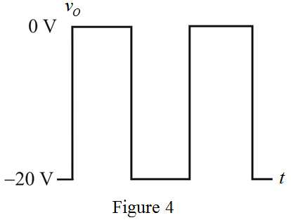
Step 9:
(e)
Refer to Figure P4.95 (e) in the text book.
The time constant. So, .
For positive half cycle of the input, left side diode is on and for negative half cycle, the right side diode is on.
Draw the modified circuit for either positive or negative half cycle input square wave.
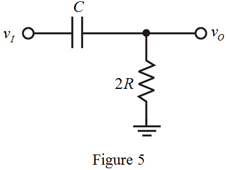
Step 10:
For an AC signal, the capacitor acts as short circuit. So, the total input voltage is dropped across the resistor. The input is simply passes to the output.
.
Draw the output waveform.
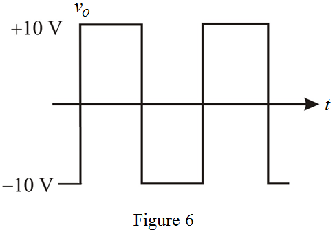
Step 11:
(f)
Refer to Figure P4.95 (f) in the text book.
This circuit can act as a high pass filter and it has two different time constants.
Draw the capacitor charging and discharging voltage waveforms.
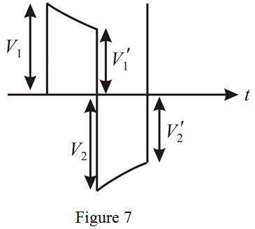
Step 12:
From Figure 7,
…… (1)
…… (2)
For positive half cycle, the diode acts as reverse bias (open) and the capacitor starts discharging. Thus, the time constant is, and time constant.
The output voltage during the positive half cycle is,
The output voltage at the end of the positive half cycle is,
Substitute for  in the equation.
in the equation.
Step 13:
For negative half cycle, the diode acts as forward bias (short) and the capacitor starts charging. Thus, the time constant is,
The output voltage during the negative half cycle is,
The output voltage at the end of the negative half cycle is,
Substitute for in the equation.

Step 14:
Substitute  for in equation (2).
for in equation (2).
 …… (3)
…… (3)
Substitute for in equation (1).
…… (4)
Equate the equation (3) and equation (4).
Step 15:
Substitute for  in equation (3), to determine the value of.
in equation (3), to determine the value of.
Determine the value of.
Step 16:
Draw the output waveform.
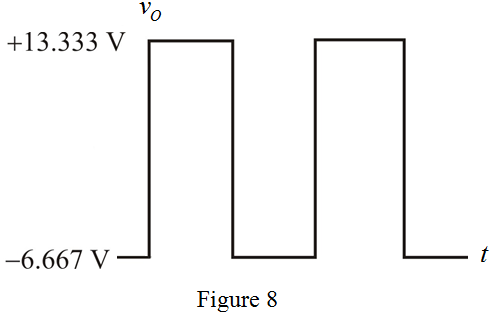
Step 17:
(g)
Refer to Figure P4.95 (g) in the text book.
For the input less than , the diode acts as forward bias (short) and the capacitor starts charging.
, the diode acts as forward bias (short) and the capacitor starts charging.

The output voltage is the equal to the DC supply.
For positive half cycle , the diode acts as reverse bias (open) and the capacitor does not discharge because there is no other passive component.
Step 18:
Draw the output waveform.
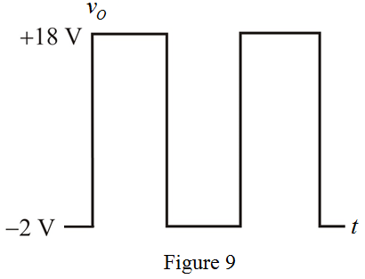
Step 19:
(h)
Refer to Figure P4.95 (h) in the text book.
This circuit can act as a high pass filter and it has two different time constants.
Draw the capacitor charging and discharging voltage waveforms.
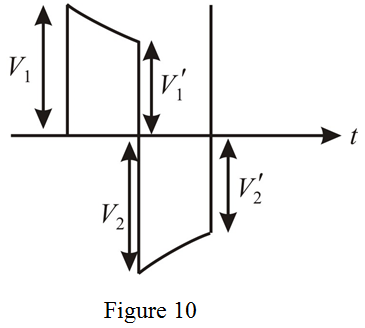
Step 20:
From Figure 10,
…… (5)
 …… (6)
…… (6)
For positive half cycle, the left side diode acts as reverse bias (open) and the capacitor starts discharging. The right side diode in forward bias (short). Thus, the time constant is, and time constant.
The output voltage during the positive half cycle is,
The output voltage at the end of the positive half cycle is,
Substitute for  in the equation.
in the equation.
For negative half cycle, the left side diode acts as forward bias (short) and the capacitor starts charging. The right side diode in reverse bias (open). Thus, the time constant is, .
The output voltage during the negative half cycle is,
The output voltage at the end of the negative half cycle is,
Substitute for in the equation.
Step 21:
Substitute for in equation (6).
…… (7)
Substitute for in equation (5).
…… (8)
Equate the equation (7) and equation (8).
Step 22:
Substitute for in equation (7), to determine the value of.
Determine the value of .
.
Step 23:
Draw the output waveform.
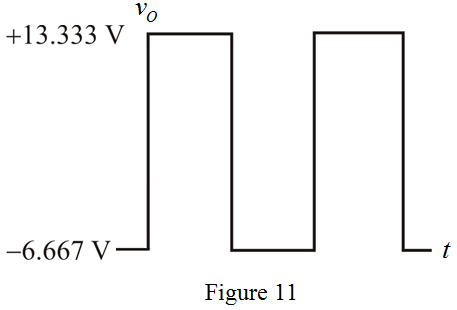
Thus, the required output waveform is sketched as shown in Figure 11.